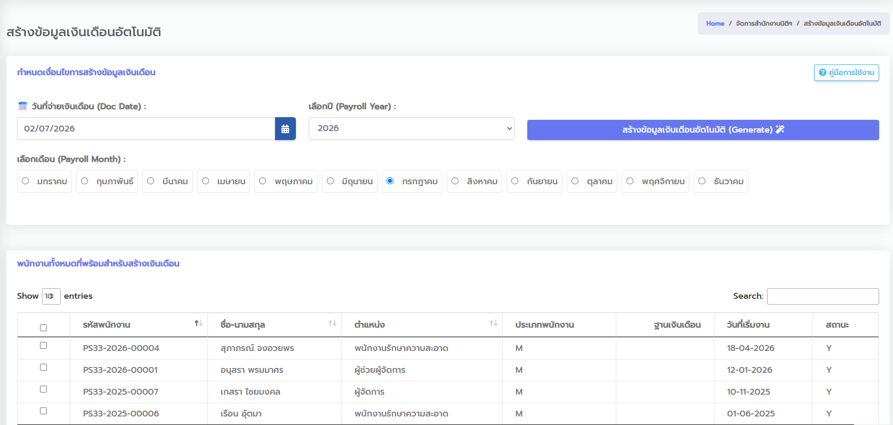
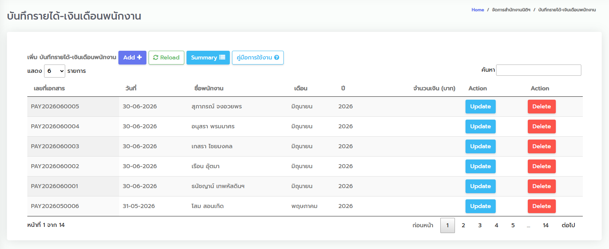
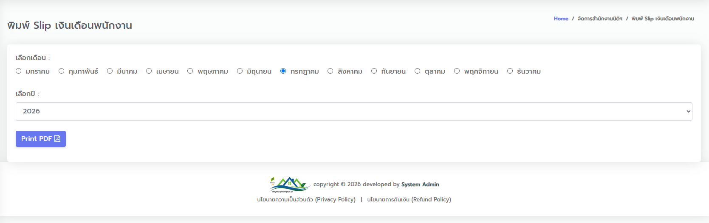

คู่มือการใช้งานหน้าจอระบบ PSHOME33
คู่มือการปฏิบัติตามหน้าจอ (UI Guide) สำหรับเจ้าหน้าที่และผู้ใช้งานนิติบุคคล
1. หน้าจอหลัก (Dashboard_admin)
หน้าจอแรกหลังจากเข้าสู่ระบบ ใช้แสดงข้อมูลสถิติที่สำคัญและการสรุปข้อมูลภาพรวมของหมู่บ้านพฤกษา 33
- สรุปข้อมูลจำนวนบ้าน: แสดงจำนวนหลังคาเรือนทั้งหมดในโครงการ และแบ่งสถานะตามประเภทต่าง ๆ เช่น บ้านที่มีคนอยู่จริง บ้านว่าง
- ยอดค้างชำระค่าส่วนกลาง: ยอดรวมเงินค้างชำระของลูกบ้านทุกหลังคาเรือน เพื่อประกอบการเร่งรัดติดตามหนี้สิน
- ยอดจัดเก็บรายรับปัจจุบัน: แสดงยอดจัดเก็บค่าส่วนกลางของเดือนปัจจุบันที่ตรวจรับเงินและอนุมัติแล้ว
- สถิติติดสติกเกอร์เข้า-ออก: แสดงข้อมูลบ้านที่ชำระเงินและได้รับสติกเกอร์ติดรถยนต์เพื่อคัดกรองรถบุคคลภายนอก
2. หน้าจอจัดการข้อมูลบ้าน (manage_house)
หน้าจอควบคุมและจัดการรายละเอียดบ้านเลขที่ รายชื่อเจ้าของบ้าน และสถานะสิทธิ์ในหมู่บ้าน
- การค้นหาข้อมูลบ้าน: ใช้แถบค้นหาด้านบนขวา โดยกรอกเลขที่บ้าน (เช่น
67/123) หรือพิมพ์ค้นหาจากชื่อเจ้าของบ้าน - การแก้ไขรายละเอียดบ้าน: คลิกปุ่ม
Updateหลังรายชื่อบ้านที่ต้องการ เพื่อทำการแก้ไขข้อมูลต่าง ๆ:- ชื่อเจ้าของบ้าน, เบอร์โทรศัพท์ และข้อมูลการติดต่อ
- สถานะการอยู่อาศัย (มีผู้พักอาศัย / ว่างเปล่า)
- ยอดค้างชำระค่าส่วนกลางเริ่มต้น (สำหรับการเปิดรอบบัญชีครั้งแรก)
- การระงับหรือเปิดใช้งานสิทธิ์: จัดการสถานะสิทธิ์การผ่านเข้า-ออกหมู่บ้าน และการตรวจสอบสถานะสติกเกอร์ของบ้านแต่ละหลัง
3. หน้าจอบันทึกชำระค่าส่วนกลาง (manage_common_fee_payment)
หน้าจอสำหรับเจ้าหน้าที่ในการคีย์ยอดและตรวจรับสลิปเงินโอนค่าส่วนกลางประจำเดือนของลูกบ้าน
- คลิกปุ่ม
Add Recordเพื่อเปิดหน้าต่างบันทึกรับเงิน - ระบุรายละเอียดที่สำคัญ:
- ระบุเลขที่บ้านที่มาชำระเงินจริง
- ตรวจสอบช่องยอดเงิน และเลือกวิธีการชำระเงิน (เงินสด หรือ โอนเงินผ่านธนาคาร)
- ระบุช่วงเดือนที่ชำระให้ชัดเจน (เดือนเริ่มต้น - เดือนสิ้นสุด) เพื่อให้ระบบนำไปคำนวณสิทธิ์การค้างชำระย้อนหลัง
- แนบไฟล์ภาพสลิปการโอนเงินเพื่อใช้เป็นหลักฐานและป้องกันปัญหาในอนาคต
- กดปุ่ม
Saveเพื่อส่งข้อมูลไปรอการอนุมัติ - การอนุมัติการรับเงิน: เจ้าหน้าที่การเงินหรือผู้มีสิทธิ์จะทำการตรวจสอบหลักฐานสลิปโอนเงิน เมื่อพบว่าถูกต้อง ให้คลิก
Confirm/Approveรายการจะส่งข้อมูลเข้าสมุดรายวันทั่วไป (GL) และพิมพ์ใบเสร็จรับเงินให้ลูกบ้านได้ทันที
| บ้านเลขที่ | ชื่อลูกบ้าน | จำนวนเงิน | งวดเดือน | ช่องทาง | สถานะ |
|---|---|---|---|---|---|
| 67/12 | นายสมศักดิ์ รักดี | 1,200.00 ฿ | ม.ค. 69 - มี.ค. 69 | โอนเงิน | อนุมัติแล้ว (Y) |
| 67/88 | นางวิภา ใจงาม | 800.00 ฿ | ม.ค. 69 - ก.พ. 69 | โอนเงิน | รอตรวจสอบ (N) |
| 67/145 | นายธนพล มั่งมี | 400.00 ฿ | ม.ค. 69 | เงินสด | อนุมัติแล้ว (Y) |
4. หน้าจอบันทึกรายรับเบ็ดเตล็ด (manage_reciepts)
หน้าจอสำหรับออกใบเสร็จรับเงินสำหรับกรณีที่ไม่ใช่ค่าส่วนกลาง เช่น การจำหน่ายสติกเกอร์รถยนต์ ดอกเบี้ยรับ หรือค่ารับเงินอเนกประสงค์อื่นๆ
ช่อง "ประเภทรายรับ/รายได้" ห้ามปล่อยว่างเป็นเด็ดขาด เพราะระบบต้องการหมวดหมู่บัญชีที่ชัดเจนไปทำเรื่องลงสมุดรายวัน (GL) หากว่างไว้ ระบบจะบล็อกการบันทึกด้วยแจ้งเตือนสีแดงกึ่งกลางหน้าจอ
- เลือกประเภทรายรับ (เช่น รายได้สติกเกอร์รถยนต์, รายได้ค่าปรับ, รายได้อื่น ๆ)
- ระบุชื่อผู้จ่ายเงิน และยอดเงินชำระจริง
- เลือกวิธีการรับชำระเงิน และกดปุ่มบันทึก
- เมื่อผ่านการยืนยันรายการ ข้อมูลจะถูกบันทึกเข้ารายงานสมุดรายวัน (GL) ในหมวดรายได้อื่น ๆ ทันที
5. หน้าจอบันทึกใบสำคัญจ่าย (manage_voucher)
หน้าจอสำหรับบันทึกรายการใช้จ่ายเงินสดหรือเงินฝากของนิติบุคคลโครงการ เพื่อทำเรื่องขออนุมัติจ่ายจริง
- กดสร้างใบสำคัญจ่ายใหม่ ระบุเลขที่และวันที่เอกสาร
- ระบุวัตถุประสงค์ (จ่ายเพื่อ): บังคับระบุรายละเอียดให้ชัดเจนในช่อง
จ่ายเพื่อห้ามละเว้น เพื่อผลประโยชน์ในการตรวจสอบบัญชีปลายปี - รายละเอียดรายการ: เพิ่มรายการและระบุราคาสินค้าหรือบริการแต่ละตัว ยอดเงินจะสะสมและแสดงรวมโดยชิดขวาเสมอ
- แนบเอกสารใบเสร็จ ใบกำกับภาษี หรือใบเสนอราคาจากคู่ค้าเข้าระบบ
- วิธีชำระเงินและการเชื่อมโยงเงินสดย่อย (Petty Cash):
- หากจ่ายด้วยการโอนผ่านบัญชีธนาคารส่วนกลาง ให้เลือกวิธีชำระเงินเป็น
โอนเงิน - หากจ่ายหน้างานด้วยเงินสด ให้เลือกวิธีชำระเงินเป็น
เงินสด - หากระบุวิธีจ่ายเป็น
เงินสดและต้องการให้ไปหักยอดออกจาก "วงเงินสดย่อย" ของนิติบุคคล ให้คลิกติ๊กถูกที่ช่อง "ใช้เงินสดย่อย"
- หากจ่ายด้วยการโอนผ่านบัญชีธนาคารส่วนกลาง ให้เลือกวิธีชำระเงินเป็น
- เมื่อได้รับการอนุมัติและเปลี่ยนสถานะเป็นอนุมัติจ่ายจริง ระบบจะผูกยอดบัญชีและบันทึกลงสู่รายงาน GL และปรับปรุงยอดค่าใช้จ่ายย่อย (EXP) ให้อัตโนมัติ พร้อมหักยอดคงเหลือของวงเงินสดย่อยทันที (หากระบุใช้เงินสดย่อยไว้)
คู่มือการใช้งาน บันทึกใบสำคัญจ่าย / บันทึกค่าใช้จ่าย ในหน้าจอระบบ หรือเปิดไฟล์ expense_user_manaul.html เพื่อดูรายละเอียดขั้นตอนอย่างสมบูรณ์
6. จัดการเงินสดย่อยและรายงานความเคลื่อนไหว (Petty Cash & Statement)
หน้าสำหรับบริหารเงินสำรองกองกลางเงินสดย่อยของนิติบุคคล และการเรียกดูรายงานความเคลื่อนไหวเงินสดย่อย (Petty Cash Statement)
ใช้สำหรับบันทึกการเติมเงินสดสำรองเข้ากองกลางนิติบุคคล (เช่น การถอนเงินสดจากธนาคารมาเก็บไว้)
- ไปที่เมนู **"รับเงินสดย่อย"** (
manage_petty_cash) และคลิกปุ่มAdd - ระบุเลขที่เอกสาร วันที่เติมเงิน และระบุจำนวนเงินที่นำเข้าสะสม
- กำหนดสถานะ (Status): ต้องเลือกสถานะเป็น อนุมัติ (Y) เท่านั้น ระบบจึงจะนับเป็นยอดเงินรับเข้าในรายงาน
- กดปุ่ม
Saveเพื่อบันทึกข้อมูล
หน้าจอสรุปความเคลื่อนไหวรายวันและคำนวณยอดสะสมคงเหลือ (Running Balance) คล้ายใบแสดงรายการบัญชีธนาคาร
- ไปที่เมนู **"เคลื่อนไหวเงินสดย่อย"** (
petty_cash_statement_report) - กำหนดช่วงเวลา: เลือกวันที่เริ่มต้นและวันที่สิ้นสุดการวิเคราะห์ (ระบบจะตั้งค่าเริ่มต้นเป็นเดือนปัจจุบันให้)
- รูปแบบการส่งออกรายงาน:
- คลิกปุ่ม
แสดงข้อมูล (Show)เพื่อแสดงผลรายการตารางพร้อมยอดยกมาบนหน้าจอ - คลิกปุ่ม
Print PDFเพื่อดาวน์โหลดหรือพิมพ์รายงานรูปแบบแนวนอน (Landscape) สวยงามเป็นทางการ - คลิกปุ่ม
Export Excelเพื่อส่งออกข้อมูลดิบในรูปแบบ CSV สำหรับนำไปจัดการต่อบน Microsoft Excel
- คลิกปุ่ม
| วันที่ | เลขที่เอกสาร | รายละเอียด | รับเข้า | จ่ายออก | คงเหลือ |
|---|---|---|---|---|---|
| ก่อน 01-06-2026 | - | ยอดยกมา ยอดสะสมยกมาเริ่มต้นรอบบัญชี | - | - | 10,000.00 ฿ |
| 05-06-2026 | CASH-06-2026-0001 | รับเติมเงินสดย่อยสำรองสัปดาห์แรก | +5,000.00 ฿ | - | 15,000.00 ฿ |
| 08-06-2026 | EXP-2026-06-0001 | ซื้อกระดาษสำนักงานและแฟ้มใส่บิล | - | -350.00 ฿ | 14,650.00 ฿ |
| 12-06-2026 | EXP-2026-06-0002 | จ่ายค่าจ้างล้างเครื่องปรับอากาศส่วนกลาง | - | -1,200.00 ฿ | 13,450.00 ฿ |
คู่มือเงินสดย่อย ในหน้าจอระบบ หรือเปิดไฟล์ how_to_cash_flow.html เพื่อดูวิธีวิเคราะห์และคำนวณยอดยกมา-ยอดคงเหลือในรายงานสรุปเงินสดย่อยอย่างละเอียด
7. หน้าจอสร้างและบันทึกเงินเดือน (payroll_generate_data / manage_payroll)
กระบวนการประมวลผลสร้างข้อมูลเงินเดือนรายเดือนของพนักงานทั้งหมดโดยอัตโนมัติ และการปรับปรุงสลิปเงินเดือน (Payslip)
-
สร้างข้อมูลเงินเดือนอัตโนมัติ (หน้าจอ payroll_generate_data):
ระบุวันที่จ่ายเงินเดือน เลือกงวดปีและเดือนที่ต้องการประมวลผล ทำการเลือกติ๊กถูกพนักงานที่ต้องการสร้างรายการจ่ายเงินเดือน จากนั้นคลิกปุ่ม "สร้างข้อมูลเงินเดือนอัตโนมัติ (Generate)" เพื่อบันทึกข้อมูลตั้งต้นของทุกคนในรอบเดือนนั้น

-
ปรับปรุงรายละเอียดรายบุคคล (หน้าจอ manage_payroll):
ค้นหารายชื่อพนักงานในรอบเดือนที่สร้างขึ้น กดปุ่มแก้ไขเพื่อเพิ่มเติมค่าล่วงเวลา (OT), ค่าตอบแทนพิเศษ หรือหักเงินประเภทต่าง ๆ (เช่น เงินหักลางาน, เงินประกันค้างจ่าย)

- ระบบคำนวณและออกรหัสเอกสาร:
ระบบคำนวณยอดจ่ายสุทธิและออกรหัสรันนิ่งนัมเบอร์ของเอกสารแต่ละใบ เช่น
PAY2026070001 - การพิมพ์เอกสาร:
พิมพ์ใบสลิปเงินเดือน (Payslip) ออกเป็นเอกสาร PDF สำหรับให้พนักงานเซ็นรับ และระบบจะนำยอดรายจ่ายดังกล่าวไปลงบันทึกในสมุดบัญชีรายจ่ายของโครงการอัตโนมัติ

8. หน้าจอตรวจสอบสมุดรายวัน (manage_gl / report_gl)
หน้าจอตรวจสอบรายการบัญชีเดบิต (Dr) และเครดิต (Cr) เพื่อวัตถุประสงค์ในการทำสมุดรายวันและปิดงบดุล
- การตรวจสอบแบบแยกประเภท: ค้นหารายการแยกประเภทตามรหัสผังบัญชี เช่น ดึงเฉพาะบัญชีเงินสด (
1101) หรือเงินฝากธนาคาร (1102) - ยอดดุลสะสม: ตรวจสอบยอดผลต่างระหว่างฝั่งเดบิตและเครดิตของทุกรายการ ซึ่งระบบคุมยอดให้ยอดดุลต้องเท่ากันเสมอ (สมดุล Dr = Cr)
- ตรวจสอบย้อนกลับ: ดึงเอกสารต้นทาง (เช่น คลิกตรวจสอบว่ารายการนี้มาจากใบสำคัญรับเงิน RV เลขอะไร หรือใบสำคัญจ่าย PV เลขอะไร)
9. หน้าจอรายงานกระแสเงินสด (cash_flow_report)
หน้าสรุปเปรียบเทียบความสัมพันธ์ของสภาพคล่องทางการเงินสดไหลเข้าและเงินไหลออกรายเดือน
- เลือกตัวกรองช่วงเวลา: เลือกเดือนที่ต้องการวิเคราะห์ หรือทำเครื่องหมายถูกที่ช่อง
ทั้งหมดเพื่อสรุปภาพรวมรายปี - เลือกปีปฏิทิน: เลือกปีที่ต้องการดูผลการดำเนินงาน
- ผลลัพธ์การแสดงผล:
- ยอดไหลเข้า (Inflows): เงินชำระค่าส่วนกลางและรายรับเบ็ดเตล็ดสะสมจริง
- ยอดไหลออก (Outflows): เงินจ่ายจากใบสำคัญจ่าย และยอดเงินทดรองจ่ายอื่น ๆ
- ยอดดุลกระแสเงินสดคงเหลือสุทธิ เพื่อวิเคราะห์เงินสำรองคงเหลือโครงการ
10. หน้าจอประมวลผลผ่านรายการแยกประเภทบัญชี
หน้าจอควบคุมสำหรับผู้ดูแลระบบหรือเจ้าหน้าที่บัญชีในการประมวลผลข้อมูลรายรับ-รายจ่ายที่บันทึกไว้เข้าสู่สมุดรายวันทั่วไป (GL) ด้วยระบบแถบความคืบหน้า (Progress Bar)
หน้าจอนี้ใช้สำหรับล้างและบันทึกบัญชีแยกประเภทใหม่ทั้งหมดตั้งแต่เริ่มต้นเพื่อปรับปรุงความถูกต้อง 100%
- ตรวจสอบยอดรวมรายการสะสม: ตรวจสอบสถิติจำนวนใบสำคัญจ่าย (PV) และรายการรับเงิน (RV) ที่รอประมวลผลก่อนเริ่มทำรายการ
- ปุ่มเริ่มประมวลผล: คลิกปุ่ม
เริ่มล้างและประมวลผลใหม่ทั้งหมดเพื่อเริ่มทำงานระบบจะแสดงหน้าต่างแจ้งเตือนยืนยัน - ระหว่างประมวลผล: หน้าจอจะล็อกเมนูชั่วคราว แถบ Progress Bar สีแดงจะขยับตามกลุ่มงานจริงและเขียนข้อความลงกล่องแสดงผลประมวลผลทีละขั้นตอน
- เมื่อเสร็จสิ้น: ระบบจะปลดล็อกหน้าจอ และแสดงปุ่มดาวน์โหลดรายงาน เพื่อให้ดาวน์โหลดเก็บเป็นรายงานบันทึกประวัติ หรือกด Reset เพื่อดูค่าใหม่
หน้าจอนี้ใช้สำหรับสแกนหาเฉพาะรายรับหรือรายจ่ายที่บันทึกเข้ามาใหม่ แต่ยังค้างสะสมไม่ได้ลงบัญชีแยกประเภททั่วไป (GL)
- ตรวจสอบรายการค้างโพสต์: ตรวจสอบว่ามีรายการค้างโพสต์กี่รายการในการ์ดข้อมูลสีแดง
- กรณีไม่มีค้าง: หากข้อมูลอัปเดตหมดแล้ว ปุ่มกดจะเปลี่ยนเป็น
ข้อมูลแยกประเภทเป็นปัจจุบันแล้วสีเขียวและไม่สามารถกดส่งซ้ำได้ - การทำรายการ: คลิกปุ่ม
เริ่มดึงข้อมูลผ่านบัญชีเพื่อดึงข้อมูลค้างลงบัญชีผ่านระบบแถบสีเขียวแสดงผลความก้าวหน้าอย่างราบรื่น
11. หน้าจอระบบแจ้งซ่อมสำหรับสมาชิก (Member Repair Request)
ระบบสำหรับสมาชิก (ลูกบ้าน) ในการส่งคำขอแจ้งซ่อมแซมสิ่งอำนวยความสะดวก หรือแจ้งเรื่องร้องเรียน/แจ้งปัญหาต่าง ๆ ภายในหมู่บ้านจัดสรร พฤกษา 33
หน้าจอสำหรับสมาชิกที่ล็อกอินผ่านคอมพิวเตอร์ หรือเบราว์เซอร์ทั่วไป เพื่อบันทึกคำขอและตรวจสอบประวัติการแจ้งซ่อม
- ส่วนบันทึกคำแจ้งซ่อมใหม่ (แบบฟอร์มด้านซ้าย):
- ผู้แจ้งซ่อม / บ้านเลขที่: ระบบจะระบุชื่อสมาชิกและบ้านเลขที่ที่ผูกกับบัญชีล็อกอิน of ท่านให้อัตโนมัติแบบอ่านอย่างเดียว
- สถานที่เกิดเหตุ: ระบุจุดที่พบปัญหา เช่น "ในบ้านเลขที่...", "ถนนหน้าซอย 12" หรือ "บริเวณป้อมยามหน้าโครงการ"
- เรื่อง / หัวข้อ: กรอกหัวข้อสั้น ๆ เช่น "ฝาท่อระบายน้ำชำรุด", "ไฟถนนซอย 8 ดับ" เป็นต้น
- รายละเอียดปัญหา: กรอกรายละเอียดปัญหาเพิ่มเติมอย่างเจาะจง รวมถึงช่วงเวลาที่สะดวกให้ช่างเข้าปฏิบัติงาน
- แนบรูปภาพปัญหา: สามารถอัปโหลดภาพถ่ายหลักฐานปัญหาได้สูงสุด 3 รูป เพื่อช่วยให้ช่างนิติบุคคลวิเคราะห์ปัญหาล่วงหน้าก่อนเข้างาน
- ส่วนประวัติการแจ้งซ่อม (ตารางด้านขวา): แสดงรายการปัญหาที่เคยแจ้งซ่อมทั้งหมดโดยเรียงจากรายการล่าสุด มีรูปภาพประกอบที่คลิกซูมขยายดูได้ และแสดงสถานะการดำเนินงานของนิติบุคคล ได้แก่:
- รอดำเนินการ (Pending): เมื่อส่งข้อมูลเข้าระบบเรียบร้อยแล้วและรอการตรวจสอบจากส่วนกลาง
- กำลังดำเนินการ (In Progress): เมื่อนิติบุคคลมอบหมายงานให้ช่างผู้รับผิดชอบ (จะแสดงชื่อช่างและชื่อเล่นที่ได้รับมอบหมายใต้สถานะ)
- ดำเนินการเสสิ้น (Completed): เมื่อช่างได้ทำการซ่อมแซมและยืนยันการปิดงานเรียบร้อยแล้ว
หน้าจอสำหรับสมาชิกที่เปิดใช้งานผ่านหน้าแชต LINE OA ของหมู่บ้าน (LIFF WebApp) สะดวกในการใช้งานบนสมาร์ทโฟนโดยตรง
- การตรวจสอบตัวตนผ่าน LINE (LIFF Authentication): ระบบจะดึงค่า LINE User ID และชื่อโปรไฟล์ LINE มาตรวจสอบสิทธิ์กับฐานข้อมูลหมู่บ้านแบบเรียลไทม์ เพื่อกรอกบ้านเลขที่และข้อมูลผู้แจ้งของท่านโดยอัตโนมัติ (หากยังไม่เคยลงทะเบียนบ้านเลขที่ จะมีหน้าจอแจ้งเตือนแนะนำให้ลงทะเบียนก่อนเข้าใช้หน้าแจ้งซ่อม)
- การบันทึกข้อมูลและอัปโหลดรูปภาพ: ใช้งานกล้องหรือคลังภาพในมือถือของท่านเพื่อถ่ายและแนบรูปภาพอัปโหลดเข้าสู่คลังภาพของนิติบุคคลได้อย่างสะดวก
- การทำงานแบบเรียลไทม์ (AJAX): การบันทึกและการดึงประวัติทำผ่าน API หลังบ้าน (
member_repair_request_smart_process.php) ทำให้ไม่เกิดการโหลดหน้าเว็บใหม่ และประวัติตารางด้านล่างจะอัปเดตให้อัตโนมัติทันทีที่ส่งใบแจ้งซ่อมสำเร็จ
12. หน้าจอห้องแชต LINE OA (LINE OA Chatroom)
ระบบสำหรับผู้ดูแลระบบหรือเจ้าหน้าที่นิติบุคคลในการสื่อสารพูดคุย ตอบกลับคำถาม หรือรับแจ้งเรื่องกับสมาชิกรายบุคคลแบบเรียลไทม์ ผ่าน LINE OA
หน้าจอควบคุมฝั่งเจ้าหน้าที่บัญชี/นิติบุคคลในการตอบข้อความตรงเข้าแชต LINE ของลูกบ้าน
- ส่วนรายชื่อผู้สนทนา (แถบด้านซ้าย):
- การค้นหา: มีกล่องค้นหาแบบเรียลไทม์ที่ด้านบนเพื่อค้นหาสมาชิกจากชื่อโปรไฟล์ LINE, บ้านเลขที่ หรือชื่อจริง-นามสกุล
- การแสดงข้อมูลสมาชิก: แสดงชื่อ LINE, ข้อมูลบ้านเลขที่และชื่อจริงที่ระบบจับคู่ให้อัตโนมัติ (หากลงทะเบียนแล้ว), ตัวอย่างข้อความสุดท้ายที่ส่งมา และเวลาที่ส่ง
- ระบบแจ้งเตือนข้อความใหม่: มีวงกลมสีแดงแสดงจำนวนข้อความที่ยังไม่ได้เปิดอ่าน (Unread Counter) ของสมาชิกแต่ละรายอย่างชัดเจน
- ส่วนห้องแชตสนทนา (แถบด้านขวา):
- การแสดงบทสนทนา: แสดงกล่องข้อความแยกฝั่งชัดเจน โดยฝั่งซ้าย (สีขาว) คือข้อความที่ส่งมาจากลูกบ้าน และฝั่งขวา (สีน้ำเงิน) คือข้อความที่แอดมินนิติบุคคลตอบกลับไป
- การดูรูปภาพ: หากลูกบ้านถ่ายรูปส่งมาในแชต สามารถคลิกที่รูปภาพเพื่อเปิดหน้าต่างขยายซูมดูรูปภาพขนาดใหญ่ได้ทันที
- กล่องข้อความตอบกลับ: มีช่องกรอกข้อความที่ด้านล่าง สามารถพิมพ์ข้อความแล้วกด Enter หรือคลิกปุ่มส่งเพื่อตอบกลับเข้าแชต LINE ของลูกบ้านได้ทันทีผ่านระบบ **LINE Push Message API**
- ระบบเรียลไทม์สลับหน้าต่าง: ห้องแชตจะดึงข้อความใหม่เข้ามาแสดงผลโดยอัตโนมัติทุก ๆ 5 วินาที ทำให้ไม่พลาดทุกการติดต่อโดยไม่ต้องกดโหลดหน้าเว็บใหม่
13. ระบบบันทึกการเข้า-ออกของผู้มาติดต่อ (Visitor Management System)
ระบบควบคุมและบันทึกข้อมูลการเข้า-ออกหมู่บ้านของผู้มาติดต่อ (Visitor) ในระดับโครงการผ่านสมาร์ทโฟนของเจ้าหน้าที่ รปภ. / นิติบุคคล และประมวลผลหลังบ้าน
หน้าเว็บสำหรับเจ้าหน้าที่โครงการหรือพนักงานรักษาความปลอดภัย (รปภ.) ใช้งานผ่านมือถือ/แท็บเล็ตบริเวณป้อมยามหน้าหมู่บ้าน
- การสแกนหรือบันทึกข้อมูล Check-In: บันทึกรายละเอียดข้อมูลผู้ติดต่อ ได้แก่ ชื่อผู้ติดต่อ, หมายเลขโทรศัพท์, เลขทะเบียนรถยนต์/จักรยานยนต์, บ้านเลขที่ที่จะเข้าพบ และประเภทผู้มาติดต่อ (ช่าง/แขก/ญาติ/ขนส่งพัสดุ)
- ระบบแจ้งเตือนเข้าแชต LINE ลูกบ้าน (Auto Line Notify): เมื่อกดบันทึกเข้าหมู่บ้าน (Check-In) ระบบจะประมวลผลดึง Token การเชื่อมโยงและส่งข้อความแจ้งเตือนความปลอดภัยตรงไปยัง LINE OA ของบ้านเลขที่ปลายทางทันทีโดยอัตโนมัติ ทำให้ลูกบ้านทราบว่ามีคนมาขอเข้าพบ
- การทำรายการ Check-Out (ออกจากโครงการ): เมื่อผู้ติดต่อทำธุระเสร็จและกำลังจะออก เจ้าหน้าที่ รปภ. ค้นหาทะเบียนรถหรือชื่อจากตาราง แล้วกดปุ่มออกจากโครงการเพื่อลงบันทึกเวลาออกจากพื้นที่อย่างแม่นยำ
📖 อ่านคู่มือฉบับเต็ม: คู่มือการลงทะเบียนผู้มาติดต่ออัตโนมัติ (visitor_howto.html) และ คู่มือเชิงเทคนิคฐานข้อมูลผู้มาติดต่อ (visitor_systems_step.html)
14. รายงานวิเคราะห์และคาดการณ์การจัดเก็บค่าส่วนกลาง (Revenue & Projection Reports)
ระบบรายงานวิเคราะห์ข้อมูลการชำระเงินค่าส่วนกลางของลูกบ้านแยกรายละเอียดแต่ละเดือนและซอย เพื่อให้คณะกรรมการ/นิติบุคคลเห็นภาพรวมและประสิทธิภาพการเงิน
บริเวณแถบค้นหาจะมีปุ่มสลับการดูรายงาน 3 รูปแบบได้อย่างรวดเร็ว:
- รายงานยอดเงินชำระ: (
report_house_payment_split_monthly.php) แสดงยอดเงินที่ชำระแยกแต่ละเดือนของแต่ละบ้าน - รายงานจำนวนบ้านที่ชำระ: (
report_house_payment_split_monthly_2.php) สรุปตัวเลขจำนวนหลังคาเรือน (หน่วย: หลัง) ที่ได้ทำการชำระเงินเรียบร้อยแล้วแยกตามรายซอยของแต่ละเดือน พร้อมแสดงยอดเงินชำระรายเดือนรายซอย - รายงานเป้าหมายคาดการณ์: (
report_house_payment_split_monthly_3.php) วิเคราะห์เปรียบเทียบระหว่างยอดเงินชำระจริง (Actual) และ ยอดคาดการณ์เป้าหมายที่จะจัดเก็บได้ (Target) 100% จากฐานข้อมูลค่าส่วนกลางรายบ้านในแต่ละซอยและแต่ละเดือน พร้อมแสดงสถิติเปอร์เซ็นต์ประสิทธิภาพการจัดเก็บสะสม
💡 หมายเหตุ: รายงานทั้งหมดคัดกรองเฉพาะยอดที่มีสถานะการยืนยันการชำระเงินเสร็จสิ้นแล้วเท่านั้น (payment_status = 'Y') และเรียงลำดับซอยตามหลักคณิตศาสตร์อย่างถูกต้อง